Manually Fulfilling Dependencies on Debian

msmtp is yet another Mail Transfer Agent that merely relays the outgoing email message to another (e.g. your ISP’s) SMTP server. There seems to be quite a lot of these, but this one seems to be the most actively maintained - see its homepage on sourceforge for more information and documentation. At time of writing, the last stable release is March 9, 2014 which is very recent.
Other similar ones, such as ssmtp, esmtp and nbsmtp, still seem to work, they are pretty simple programs with few dependencies apart from the C environment which basically never changes anymore and they are recompiled and repackaged regularly by the distributions.
I have a machine running on Debian stable but wanted a newer version of msmtp than is packaged for stable. So I cloned the source code using git and compiled it.
However, after removing the default mail transfer agent (Exim), Debian’s apt command is desperate to re-install it.
So I needed to tell the system that I already have a mail transfer agent. This post explains how I did it. I don’t know if this is the correct ‘modern’ way to do it, but it worked for me, and it is quite interesting because it exposes a little of how Apt works under the hood.
Fortunately, my problem is the use case given in the old Apt Howto under the section called 4.1 How to install locally compiled packages: equivs there is more useful information there.
The package that helps us to circumvent Debian package dependencies is called equivs, so first I needed to install that. sudo apt-get install equivs
sudo apt-get install equivs
Next I ran the following command.
equivs-control msmtp-git
This created a template Debian control file. I gave it a meaningful name, i.e. msmtp installed from git.
I added the following lines:
Package: msmtp-git
Provides: mail-transport-agent
The Provides line is the key, it tells the system that a mail-transport-agent is installed.
Then I created a .deb from this control file.
equivs-build msmtp-git
Lastly I installed the deb:
sudo dpkg --install msmtp-git_1.0_all.deb
Pretty weird but it works.
Image Credit: Atlas - The Titan’s Punishment by IndigoDesigns
A Distributed Global Textual Community
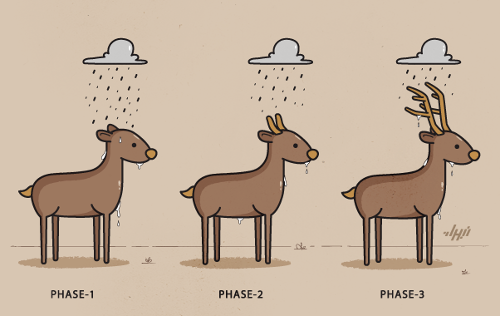In the digital humanities when a scholar wants to transcribe and edit texts such as ancient or medieval manuscripts, that scholar uses her institution’s own systems (for the rest of this post I will call this a ‘site’).
In Birmingham we have the Workspace for collaborative editing that I was the main coder on, this provides editing and analysis facilities for digital text projects hosted or associated with the University of Birmingham in some way. There are several of these kind of sites, maybe even dozens.
Textual Communities is another such site, based at the University of Saskatchewan, wherever that is, however, the difference is that Textual Communities aims to “provide an infrastructure and tools to allow anyone, anywhere, interested in a text to contribute to its study, as part of a community working together.”
Here is a photo of some of the main Textual Communities people:
So as part of the Estoria de Espanna Project, I have been using Textual Communities and integrating it somewhat with some display and analysis tools on a server in Birmingham.
Part of the vision from the Textual Communities people is to build a global editing community, which would imply being an open and distributed system, not being based on one server.
Furthermore, there are performance and reliability drawbacks to relying on a single server in Canada to hold the data and pass it back and forth in real time over HTTP.
So the first immediate approach I have taken is to use database replication.
1. Master/slave model
The immediate steps to make Birmingham back up the Canadian site is a simple and low level approach and it is a master/slave model.
Master = Canadian Server
Slave = Birmingham server
1. Every Hour, the slave server checks that the connecting SSH tunnel is still up, if it is not it re-establishes it. The SSH tunnel can be broken by server reboots or network issues.
2. Every time a write happens on the master server, the slave copies it automatically.
3. The code that builds the edition (the public frontend that is one of the key project outputs) works from the local copy of the database which is far more efficient, and if the master goes down, the data is still available locally.
This takes us 50% of the way but there is a big step missing. You cannot actually write data to the slave without breaking the approach, if master is down, and you start writing in the slave, there is no automatic way to get the changes back.
It also doesn’t scale very easily, adding a new site to the global textual community is a completely manual process. Beyond three or four institutions it would be a serious labour cost in maintaining the whole thing.
So sooner or later, you need to design a high level approach. The rest of this post is what I have been studying and building little test prototypes for.
2. A textual communities distribution system
Caveat emptor: So this the approach I have been working on, it may not be the approach favoured in the end by the Estoria project or Textual Communities.

Versions of data can be written at different sites and shared between them, yet what is considered the ‘approved’ or ‘best’ or ‘current’ version may be different at different sites.
Therefore the key to making textual communities into a distributed system is to separate the sharing of versions from the interpretation of these versions.
Each site must therefore keep an additional file/directory form of the data for use by the distribution system. These are plain-text files that can be easily backed up and easily analysed (a similar format to the existing textual communities API, see below).
The actual textual community software does not have to be run from these files, e.g. the Canadian site which uses MySQL can carry on doing so, but the internal changes to the database are exported in real time to plain text files in the data directory.
Likewise, changes by other sites can then be read into Canadian MySQL database from the data files (which changes are accepted and applied is subject to its merge algorithm, see below).
The data files are organised in a three level directory structure. The naming of the directories can be interpreted in different ways:
According to an SQL database approach:
database_name/table_name/row_id/
Or in a document oriented approach:
database_name/collection/document/
Or in object oriented way:
object_name_space/object_type/object_id/
Inside the lowest level directory are files, each file is a version of the data fragment expressed in (or at least wrapped) in JSON. The system of distribution does not actually care what fields are inside the file.
For example, a transcription of a page in the textual communities API is already expressed in this format with a field called “text” which contains the TEI XML text, as well as other fields (id, user, doc, create_date, commit_date, prev, next).
The first version of this data file would be named like this:
textual_communities/transcripts/1688800/1.json
New versions are written according to a principle called copy-on-write. When a new version is written, the old file is left alone, the new file is called:
textual_communities/transcripts/1688800/2.json
There is also a symbolic link called ‘current’, this points to what is the current canonical version of the data (for this particular site).
Different people at different sites can generate new versions of the file, which are automatically shared using git. However, what ‘current’ points to depends on a site specific algorithm.
The simplest algorithm is to point current at the file with the highest integer in the file name, however, sites with editors and crowd sourcing etc will not do that, current will only be re-pointed when the editor (the scholar) has approved it.
Groups of sites can have the same of or different algorithms, it does not affect the system of distribution.
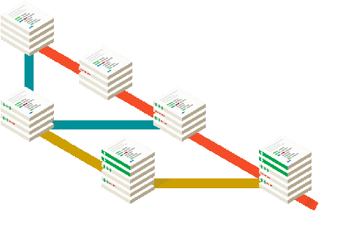Since data files are tracked and shared using git, this creates metadata that can be used to power a user-friendly web frontend for editors to see new versions, approve/disapprove them and look at history.
When a new version is approved by the local editor, current is repointed to the new file, if the version is not approved, it is just ignored. Undoing a new version is moving current to the older file, the rejected change is just ignored.
Using plain files and git solves many problems with crowd sourcing and distributed editing without having to write the software ourselves.
When the files are used, e.g. they are loaded into the Canadian site’s MySQL database, the file pointed to by current is uploaded, the other files can be safely ignored.
Git has an event based system known as ‘hooks’. So for example, when a new version of a file is created at a site, various actions can happen, such as notifying the relevant local editors that a newer version is available and can be approved or ignored.
3. Beyond Textual Communities - Digital Editions
While it is somewhat parochial to talk about the project I am working on, others in the global “Textual Communities” may have the same aspirations and problems. Eventually you want to take the live form of the text and turn it into digital editions.
The previous projects I was working on used Python and MongoDB for serverside applications, but increasingly I am using IndexedDB, Javascript and HTML5 to make the local browser do the work and allow the user to continue offline.
These data directories can, more or less, be exposed via the web server to Javascript as is, just with a few bits of censoring any relevant private information. This is several orders of magnitude more efficient than an application server like Django or Ruby on rails serving the data.
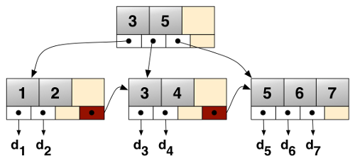I have been working on a B+Tree representation of the Estoria de Espanna project data to provide search and a fast web frontend, these can be read directly from the data files.
A fast web server like Nginx throwing out static files combined with B+tree index for searches is pretty much unbeatable in terms of performance. It is also pretty future proof - stupid lasts longer than clever! The importance of this cannot be overstated in externally funded projects that exist for their period of project funding and then afterwards are maintained on a while-we-can basis.
Also, I am hoping to produce native mobile applications as part of the Estoria project output, compiling an abridged version of the data files directly into the app is far easier and has far better performance than trying to port web application code to a phone by statically linking in a Python interpreter.
4. The End of the Beginning
Somebody might come up with something better and the Textual communities probably have their own strong ideas, but this is where my thoughts and experiments are at now.
{kind=link}
Modern Mounting with Udisks2

In this post we look at the changes in disk mounting and then look at the udisksctl command which allows you to automount disks from the command line. Feel free to skip past the background info if you just want to learn how to use the command.
Background
In the beginning (Thursday, 1 January 1970?) to add a storage device (such as a hard disk) to a computer was an infrequent affair, and required the machine to be turned off.
So the classic system of disk mounting on a Posix (‘Unix-like’) system was for the system administrator to list all the disks in a plain text file systems table, which on most systems can be found in the file /etc/fstab.
Nowadays servers often have the ability to add and remove disks without turning the machine off. Even in desktop computers, SATA drives have this facility too at least according to the SATA drive - but it depends a lot on the manufacturer of motherboard controller actually following the standard so it is not usually worth the risk.
The main thing that has really brought hotplugging into use is external disks such as USB drives and other trendy connectors that come and (mostly) go such as Firewire, eSata, Thunderbolt, etc.

In the early 2000s, the first attempt to cope with this was called HAL - Hardware Abstraction Layer, which did what it said on the tin, provided a layer between device nodes and the user of the nodes, so storage devices (and other hardware) can be added and removed without rebooting this system and without rewriting the /etc/fstab file.
Then everything gets replaced a dizzying number of times (DeviceKit, devfs, etc) as better approaches are discovered in a fast moving period of hardware development, udev eventually won and was the main thing for the rest of the decade.
When a device is added or removed from the system, the Linux kernel notices and sends out an event. Udev is a daemon that waits around listening for these events and then responding accordingly. udev runs in user space not kernel space which is good for security as you cannot plug in a USB stick and take over the kernel like on some proprietary operating systems.
In 2012, the udev project merged into the systemd project; systemd is the next generation (or current generation for some distributions) system and service manager. Systemd is really cool and is being adopted by most of the major distributions but it is still a year or two away in some cases depending on their release cycles.
Anyway, the point is that if you want to control disks on the command line and you are using the mount command you are 20 years out of date. Enough history, lets get to the flesh.
Command Line Usage
When you hot plug disks in the system, the graphical interface automatically reacts and provides buttons to mount, unmount and so on. However, if you have accessed a machine remotely, or just like to use the command line, then this post will tell you how to use the same automounting approach as the GUI.
For a system controlled by udev (or systemd), one command line tool is called udisks. It has two versions, in the original version 1, the command is udisks, for the second version udisks2, it is udisksctl.
If you don’t have these commands already installed then you will have to install the udisks2 or udisks packages. In the case of the Debian distribution, udisks is in Wheezy and udisks2 is in Jessie. I seem to have both installed for some reason, possibly because I started at Wheezy and upgraded to Jessie.
Anyway, we will look at the newest one, udisksctl.
udisksctl
The main commands follow, there are several more that can be seen with:
udisksctl help
To see a list of disks attached to the system:
udisksctl status
For a very in depth list of disk information:
udisksctl dump
To mount a filesystem:
udisksctl mount -b /dev/sdb1
You don’t need to give a location, it will sort that out automatically for you. On my system it mounts the disk at /media/username/label where username is obviously your username and label is the label of the disk partition, other distributions may deal with it differently.
To unmount a filesystem:
udisksctl unmount -b /dev/sdb1
Note that the command is unmount with an N, not umount like the classic command.
Note that these command names autocomplete which is kinda cool.
udisks
The old udisks command is pretty similar except instead of giving a command name, you give an argument, e.g. to get the full disk information:
udisks --dump
Instead of status, it has –enumerate. This option lists partitions instead of physical disks like in the newer udisksctl.
Go forth and mount
So udisksctl is pretty cool, we can now mount and unmount disks from the command line in the same way as the GUI. Do remember that the disk information from the udisksctl dump command can quite be useful when wanting to know about the disks attached to a system.
Python’s Disappearing Long Type
Note: everything below refers to the default (missionary position) C implementation of Python.
If you are converting Python code from Python 2 to Python 3, you might notice that the conversion tool transforms any uses of long() into int(). If that confuses you, this post will hopefully make it clear.
Before Python 2.2, there was a clear distinction between two of the Python numerical types, the int type and the Python long type.
Firstly, Python’s int type was implemented as a signed long. So a Python int takes 32 bits of memory, which while not as efficient as some really optimised approach using shorter types, is still very fast indeed.
Secondly, Python’s long type is an integer of unlimited size (well until you run of RAM - which would be an unrealistically massive number not useful for anything).
Python’s long type does not map directly to a C type, it is a custom type implemented in the Python source code somewhere which I guess uses a C struct or whatever. As you might imagine, using the Python long type is significantly more RAM intensive and slower than the Python int type, but in reality it is rarely a problem (see below).
Hans Fangohr did a little performance testing and found that Python’s long type is about three times slower than the Python’s int type.
Unified ints were brought in for Python 2.2. This starts off as a Python int but transforms magically to a Python long if it needs to. Here is how it works in Python 2.2 to 2.7:
>>> import sys
>>> sys.maxsize
9223372036854775807
>>> type(sys.maxsize)
<type 'int'>
>>> sys.maxsize + 1
9223372036854775808L
>>> type(sys.maxsize + 1)
<type 'long'>
>>> long
<type 'long'>
Note that when we add 1 to sys.maxsize, the result has an L suffix to denote it is a Python long and no longer a 32 bit number.
In Python 3, it works in a similar the way, however the fact you are no longer using a 32 bit type is now completely hidden away from the user:
>>> import sys
>>> sys.maxsize
9223372036854775807
>>> type(sys.maxsize)
<class 'int'>
>>> sys.maxsize + 1
9223372036854775808
>>> type(sys.maxsize + 1)
<class 'int'>
>>> long
Traceback (most recent call last):
File "<stdin>", line 1, in <module>
NameError: name 'long' is not defined
This time, when we add 1 to sys.maxsize, the result has no L suffix; trying to call the long constructor function causes an exception because it does not exist anymore in Python 3.
Of course, the fun of Python is that being a high level language, we normally don’t really care as long a we get a number; this is it rightly got changed it to be one unified type.
One might design a high performance application not to use the Python long type if it turns out to be a bottleneck. However, normally you would have other bigger insurmountable bottlenecks in your software/hardware/network stack so you don’t care about this.
However, if you are working on a multi-language project, especially if you are using Python alongside a lower level language like C, then it is useful to know what is going on underneath the Python types.
The Python float type is implemented as a C double. This doesn’t change across versions. Several other numeric types are available in Python of course.
So if you see long being converted to int by the 2to3 conversion tool, now you know why.
Image Credit: The Spiderbot by Raikoh
The Digital Text
In this post we will example the digital text and how and why it is encoded.
Denarius
Wars are often an unexpected event, and a lot of the major currency developments in the 19th and 20th centuries were due to wars. In the ancient world it was no different. The requirement to quickly gather resources required an efficient form of money.
During the Second Punic War, in 211 BC, Rome brought out the Denarius, which means ‘containing ten’ - because one silver Denarius was worth ten bronze (later copper) Asses.
During the Third Punic war, in 140 BC, Rome decided to go hexadecimal, where one silver-coloured Denarius became worth 16 copper Asses.
The silver-coloured Denarius was considered a day’s wages for a soldier. The gold-coloured Solidus varied in value but eventually stabilised by the 8th century as 12 denarii.
The Romans carried spread currency around and in Britain, the denarius became the penny but was still written as d until 1971 e.g. 5d for 5 pence.
12d made a shilling, which is the Anglo-Saxon term for the Solidus. The shilling was in the 16th century pegged to the value of a cow in Kent market.
Twenty shilling made a pound which was named after the unit of mass, a pound in cash was originally worth the value of a pound weight of silver (which is now about £300).
The pound of a unit of mass is itself Roman of course, from libra, which is why pound is shortened to lb. The pound £ sign was originally an L. 1 lb in mass is 16 ounces.
Part the deal when Britain applied to join the European Economic Community in the 1960s and 1970s, was that we got rid of all these crazy measurements and adopted metric, also known as scientific measurements, which we did eventually, to a certain extent. For example, milk, beer and cider are officially sold in units of 568 mL!
So until recently, the idea of non-base 10 measurements was completely normal.
Binary
George Boole was a theologian who was also one of the greatest mathematicians of the 19th Century.Boole understood mathematics and religion as intertwined. George Boole believed that studying mathematics would help reveal a new understanding of God.

More on George Boole: http://zeth.net/archive/2007/07/19/what-is-truth-part-3-all-you-need-is-one-and-zero/
The core idea that all knowledge and thought could be reduced to two factors nothing (0) and God (1), had long been discussed, for example by the the Jesuit Gottfried Leibniz writing in the 17th Century. However, Boole had the mathematical knowledge to take the idea and build a complete system of logic around it.

Everything is either True (God - 1) or False (nothing - 0):
1 or 0 == 1
0 or 1 == 1
1 or 1 == 0
0 or 0 == 0
1 and 1 == 1
0 and 0 == 0
1 and 0 == 0
0 and 1 == 0
not 0 == 1
not 1 == 0
Everything that is not God is nothingness, everything that is something is God. God fills the nothingness but the nothingness cannot conquer God.
Any number can be represented by any sequence of bits. A bit is 0 or a 1.
| Binary | Decimal |
|---|---|
| 0 | 0 |
| 1 | 1 |
| 10 | 2 |
| 11 | 3 |
| 100 | 4 |
| 101 | 5 |
| 110 | 6 |
| 111 | 7 |
| 1000 | 8 |
| 1001 | 9 |
| 1010 | 10 |
| 1011 | 11 |
| 1100 | 12 |
| 1101 | 13 |
| 1110 | 14 |
| 1111 | 15 |
| 10000 | 16 |
Traditionally, eight bits was called a byte (more correctly it is an octet). Four bits is a nibble.
A computer processor has lots of microscopic transistors. The CPU in my laptop (the Intel Ivy Bridge) has 1.4 billion of them. Each transistor is like a switch with an on and off state.
Hexadecimal
Binary is very low level. The first level of abstraction over binary is called hexadecimal.
In previous lecture, we looked at how and when and where computing was developed. These early computer developers choose the most efficient representation. As we mentioned earlier, until recently non-base 10 measurements were completely normal.
Hexadecimal (‘hex’ for short) is counting in base 16, here is the table from above with hex as well:
| Binary | Hex | Decimal |
|---|---|---|
| 0 | 0 | 0 |
| 1 | 1 | 1 |
| 10 | 2 | 2 |
| 11 | 3 | 3 |
| 100 | 4 | 4 |
| 101 | 5 | 5 |
| 110 | 6 | 6 |
| 111 | 7 | 7 |
| 1000 | 8 | 8 |
| 1001 | 9 | 9 |
| 1010 | a | 10 |
| 1011 | b | 11 |
| 1100 | c | 12 |
| 1101 | d | 13 |
| 1110 | e | 14 |
| 1111 | f | 15 |
| 10000 | 10 | 16 |
Now it is easy to convert any binary number to hex. You just split it up into nibbles from the right.
So this number:
11111011110
Split up is:
0111 1101 1110
7 d e
So in hex it is 7de.
What number is it in decimal? Well that is more complicated. Going from binary to decimal requires you to split the binary number up into parts:
10000000000 1024
1000000000 512
100000000 256
10000000 128
1000000 64
10000 16
1000 8
100 4
10 2
1024 + 512 + 256 + 128 + 64 + 16 + 8 + 4 + 2 = ?
So data is electrical impulses in a transistor, which represent 1 and 0, which are then hexadecimal numbers.
Now we have numbers, we can now encode characters. Each character is given a hex number.
So 41 in hex (which is 65 in decimal) is “latin capital letter A”.
There are different encodings (mapping between numbers and characters) but the only one that really matters in 2014 is called UTF-8 commonly called Unicode (although there are other forms of Unicode which did not win).
UTF-8 has room for 1,112,064 different characters and symbols which aim to represent all of the world’s languages.
The first 128 characters are carried over from an older standard called ASCII. The first 32 of these are historic control characters for controlling printers and teletype devices (remember those from a previous lecture?).
20 in hex (so 32 in decimal) is the empty space, then we get punctuation, then we get the numbers and so more punctuation etc then the letters in upper case then some more symbols then the letters in lower case etc.
This gets us to 7E (126) which is ~, and we have all of the English keyboard covered. The next 129 characters are Western European languages (German etc) and then it carries on after that through all the world’s letters and symbols.
Including some really fun stuff added to give compatibility with Japanese mobile phones:
http://www.fileformat.info/info/unicode/char/1f4a9/index.htm http://www.fileformat.info/info/unicode/char/1f302/index.htm http://www.fileformat.info/info/unicode/block/miscellaneous_symbols_and_pictographs/images.htm http://en.wikipedia.org/wiki/Emoji
So a digital text is a series of these hexadecimal numbers representing characters and symbols including spaces (20 in hex/32 in decimal) and control codes such as line breaks (0A in hex, 10 in decimal) and so on.
Here is a nice chart version of the first 127 (ASCII) characters: http://web.cs.mun.ca/~michael/c/ascii-table.html
So you can decode these characters (with some spaces added to make it simpler):
41 6e 64 20 74 68 65 72 65 66 6f 72 65 20 6e 65 76 65 72 20 73 65 6e 64 20 74 6f 20 6b 6e 6f 77 20 66 6f 72 20 77 68 6f 6d 20 74 68 65 20 62 65 6c 6c 20 74 6f 6c 6c 73 3b 20 49 74 20 74 6f 6c 6c 73 20 66 6f 72 20 74 68 65 65 2e
To make it clear that something is a hex value, it is often prefixed with 0x or x or U+.
This is as good as it far as it goes. But to make practical use of the data, just loads of text doesn’t help that much.
If we want to make a digital representation of a humanities artefact like a manuscript, we need to use a file format. Otherwise the digital text is of limited use for other scholars and software.
Why not use a word processor?
A word processor is an approximation of a late 19th century typewriter. A word processor will not help in transcribing this:

Let alone this:

What about this:

How about this:

In the 1980s and onwards, a group of humanities scholars created the TEI, which is a set of guidelines for digitally representing humanities data:
These Guidelines apply to texts in any natural language, of any date, in any literary genre or text type, without restriction on form or content.
The guidelines can be found online here:
http://www.tei-c.org/release/doc/tei-p5-doc/en/html/
The TEI was initially SGML based then became XML based. What this means is that the text of the artefact is typed up, and meaning and extra information is inserted into the text using angle brackets.
An example of a text encoded using the TEI format: http://epapers.bham.ac.uk/718/1/47.xml
So in this simple line here:
<w n="6">testimonium</w>
The element <w> which means word, has an attribute n with value 6 which quite obviously tells us that it is word number 6. The text of the word then follows, and then the word ends with a closing tag: </w>
As explained in the preface to the TEI guidelines, part of the reason for them was to enable sharing of data and a new generation of shared TEI-supporting software to emerge.
Sadly that never really happened. The problem with the TEI is that it is a huge standard that doesn’t really simplify the problem space in any way. There are hundreds of available elements and every author of a TEI document uses their own subset it in his/her own way.
Churchill famously said that “Democracy is the worst form of government, except for all those other forms that have been tried from time to time.”
TEI is the worst form of encoding, except for all the other forms that have been tried from time to time.
Wizard of OZ
https://github.com/TEI-examples/tei-examples/blob/master/nypl.org/WizardOfOz.xml
JSON
Current interest is in storing text in JSON. Here is a really simple example:
http://zeth.net/examples/example.json
It shows a single verse.
Plain Text formats
Collating
Collating is comparing texts together. Show examples.
The politics, ethics and social context of digital culture
I thought it might be useful to give a non-digital example first. We will see whether it really helps or not!
Trams: a case study in technology
In 1700, what we now call South Birmingham was a patchwork of small subsistence tenant farms, but as people left the land to work in factories and other industrial jobs, these farms gradually became larger.
Here is a map of Birmingham in 1831, as you can see South Birmingham does not really exist yet. The built up areas are what is now known as the city centre:

One of these larger farms was called the Grange Estate, in the following image, Isaac Bate and his family pose outside the farmhouse in 1876:

At the turn of the 20th Century, there was a massive housing boom and the Grange Estate was bought in 1895 and zoned for housing and roads.
{kind=link}
It is like Sim-City, everything needed for the good life is provided, including shops and the important combination of a church and a brewery.
Victorian industrial workers would walk or cycle along quiet tree-lined avenues and then take the tram and train for longer distance travelling.
So far so good. You will notice there is no car parks, no off street parking, no garages. The total number of cars in the world was at this point was approximately 25, most of which were Benz hand made cars in Germany.
However, after the war, the brave new world required that the trees, train station and tramlines were all removed to make more space for the motorcar.
{kind=link}
The Grange Estate is now overflowing with cars, and the Alcester Road is a traffic jam for much of the day. Traffic accidents are the leading cause of death for children and Birmingham is one of the most obese cities in Europe.
Car ownership in Birmingham peaked at 50% of households, one of the highest rates of car ownership for a large city. There is not, and never will be, enough space for everyone to own a car in dense urban areas like Birmingham.
Cars socially exclude people who do not own them, and are dangerous to people walking and cycling, and prevent community building as you cannot talk to other residents while stuck in a small metal box.
There are currently 380,000 cars in Birmingham (8000 are added every year). As the population of Birmingham is predicted to continue growing, the car is becoming increasingly unsustainable. The council have produced a plan:
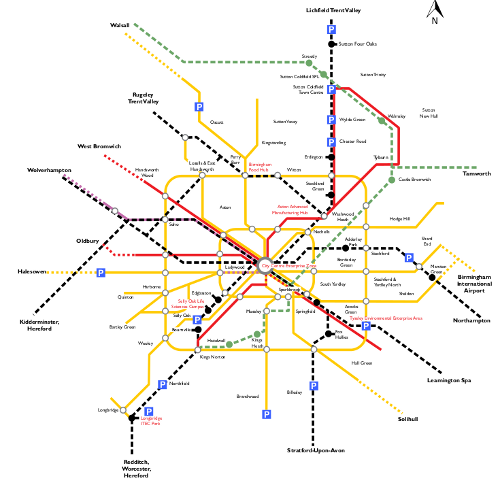{kind=link}
You guessed it, the plan is to reopen the train stations and put the trams back. Getting us precisely back to where we were in 1896.
The new Birmingham trams have a maximum capacity of 210. Cars in Birmingham have an average occupancy rate of 1.2.
A car driven for an hour every day, spends 4% of its time in use, 96% of its time rusting and getting in the way.
Cars are overproduced and inefficiency used. However, this overproduction has provided large numbers of good jobs - 145,000 in the UK alone currently work in the automotive industry.
If everyone moves to trains, trams and bikes, where do the jobs come from?
If Birmingham gets its comprehensive tram network, it needs just 120 tram sets to provide transport for the whole city (service every 6 minutes each way).
What does Birmingham’s 60 year love affair with the car tell us about technology?
- Increased technological efficiency destroys jobs (while creating others).
- Sometimes you have to go “back to the future”
- Not all new technologies are necessarily a good idea
- Technology is never un-invented, everything survives somewhere but the rate of growth or decline is the important thing to notice.
The history of the computer is much like the history of the tram.
The real history of computing (short version)

The first programmable object is the Jacquard Loom in 1801, it used punch cards which allowed different weaving patterns.
{kind=link}
The digital age almost begins in 1843, when Lady Ada Lovelace (the daughter of poet Lord Byron) wrote the first computer programme, algorithm for Charles Babbage Analytical Engine to compute Bernoulli numbers.

The programme was written as part of a set of examples of what could be run on Charles Babbage’s computer the Analytical Engine. Sadly, the British government decided to cancel his research funding so this machine was never finished, but it would have been the first general purpose digital computer.
Here is his earlier machine called the difference engine:

The digital age tries to begin again in 1936 when Alan Turing explains in a seminar paper that any real-world general-purpose computer or computer language can approximately simulate any other real-world general-purpose computer or computer language, i.e. it is “Turing complete”.

Turing went on to create this, the Bombe, a machine designed to decipher encrypted German messages during World War II.

The successor was called Colossus, and is starting to be a recognisable computer.
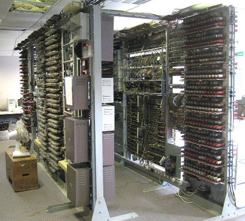{kind=link}
Alan Turing was not appreciated during his lifetime, to put it lightly. However, now he is a man of many memorials, including these:


After that we have the first non-military computer, the Manchester Mark I in 1949, and pretty much from here the digital age has begun.
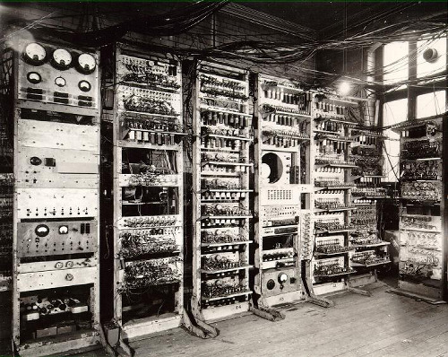{kind=link}
The next image shows the Atlas, also at the University of Manchester, the world’s most powerful computer in 1962. It had more computer capacity than the rest of the United Kingdom put together.

This is the 1970 PDP-11 operated here by Ken Thompson and Dennis Ritchie.
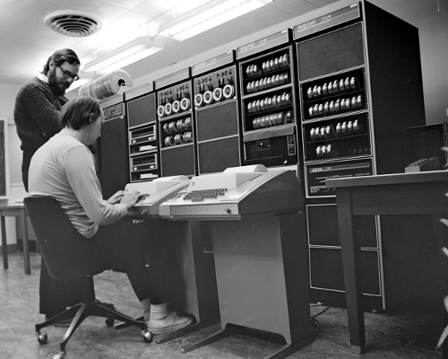{kind=link}
Thompson is sitting at a teletype terminal. Where you code into the keyboard and the computer responds by printing out the result.

Shortly afterwards, video terminals were invented. Such as this one:
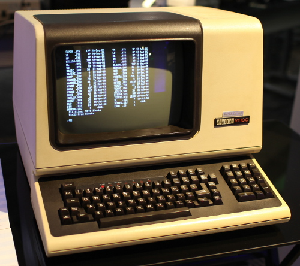{kind=link}
It may look like a computer, but it is actually just a screen and a keyboard, all the processing happens in the mainframe computer elsewhere.
These type of computers can and normally did had multiple terminals, sometimes in other rooms or other buildings.
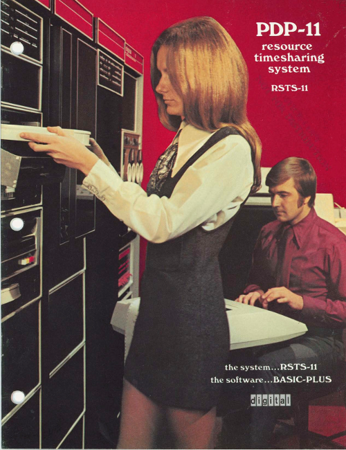{kind=link}
In the 1970s, it was called time-sharing. Hundreds or thousands of terminals could share the same mainframe - which would be maintained and updated by specialists.
I love this next photo, the guy in the front looks like he has the universal programmer’s tense expression, i.e. ‘Why the heck is this not working now?’.
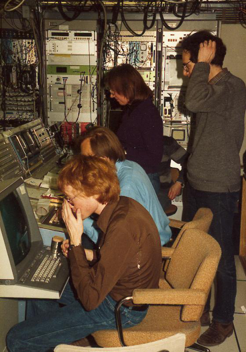{kind=link}
These mainframes ran an operating system called Unix started by Thompson and Ritchie. The different terminal users could communicate with each other and collaborate.
The terminals got smarter over time, and even had graphical front ends that looked something like this:
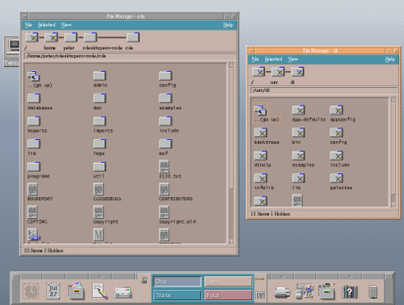{kind=link}
This was the start of the modern era of computing. Many programs that were written in the 1970s are maintained today. There is a continuous thread that runs from Lovelace and Babbage, through Turing to the real beginning of the digital age in the 1970s.
So far so good. This is our tram. Next, comes the car, or indeed two of them.
1. Personal computers
Here is an early attempt from 1969 to market a home computer.
This particular model was a commercial failure.
When the PC came out, such this example from 1981, compared to the Unix systems of the 1970s and 1980s, they were giant step backwards.
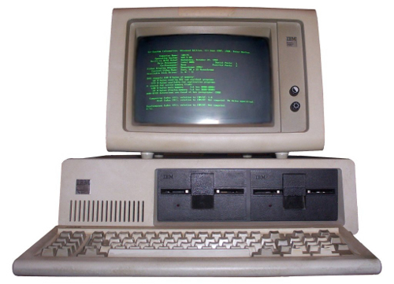{kind=link}
No networking, a single process at once, focused on really dull office tasks like typing a letter. The biggest problem looking back was the software.
2. The rise of proprietary software
Until this point, the source code of all programs had been shared among the largely academic computing world. Everyone could study and improve computer programs and share those improvements back to the community.
With the new idea of proprietary software or closed source software, you don’t legally own the software anymore, you have merely licensed the right to use it under certain conditions.

The source of the software is not shared, you just have compiled (unreadable) copy of it. There can now be a difference on what you think the software does (something useful) and what it actually does e.g. spy on you.
When you understand this point, you suddenly a realise it is a bad idea to licence or use any software that cannot be publicly peer reviewed and fixed.
Proprietary software comes with multiple pages of legalese and asks you to tick that you not only read it but also understand it. You have to lie in order to start it, and goes downhill from there.
The Snowden revelations printed in the Guardian have confirmed what we already knew, that Microsoft software has built-in backdoors for the NSA to spy on its users. Even scarier is that secret backdoors created for Microsoft and the NSA could also be exploited by criminals.
Proprietary software, especially in the form of Microsoft Windows, is a temporary aberration in the history of the digital. In 50 years time, Microsoft Windows will be considered as important as this device:
So lets get back to the trams. There were two massive and related developments which happened almost in the background, but would come to dominate the digital world.
The rise of free/open source software
In 1983, a famous programmer in MIT called Richard Stallman began the ‘Free Software’ movement. As well as being a well known software developer (he invented the concept of a live real time text editor and started the most widely used compiler today - GCC), he best known as a digital philosopher.

Stallman argued that software developers had a moral, ethical and political duty to enable co-operation and prevent restrictions on the ability of users to study, examine, peer review, modify and share software. He argued that proprietary software was anti-social, corrupt and ultimately self-defeating.
It is important to understand the difference between the terms ‘commercial’ and ‘proprietary’. Software can be ‘commercial’ - i.e. made by a company for profit, with or without being proprietary. Likewise a proprietary program may be made available at cost or at no cost.
He illustrates the concept by comparing ‘a free beer’ with ‘free speech’.
Eric Raymond and Bruce Perens created a later related concept called ‘open source’, which emphases the practical aspects rather than the political and ethical ones. For example, the vast majority of software is not created for sale in packaged boxes but is created use within companies and institutions where software is not their primary purpose. So if this software is shared and improved in a community, it gives added value to those who engage in it.
Almost every major software development of the 1990s and 21st century has happened within the Free Software/Open Source world including Linux and Android.
Most importantly, the most famous piece of free/open source software of them all, the World Wide Web.
The World Wide Web
In the early 1990s, the best designed and most powerful information protocol was called Gopher. However, despite its technical strengths, Gopher eventually lost out because the copyright owner, the University of Minnesota, wanted to sell it as proprietary software.
And finally a Brit again!
{kind=link}
Tim Berners-Lee created World Wide Web, which while technically inferior to Gopher, was free software. Anyone could develop a server or a client without having to ask or pay anyone for permission. When WWW became widely shared in 1993, proprietary Gopher was toast. Gopher was eventually re-licensed as free software in 2000, but it was too late, WWW had taken over everything.
Finally, desktop computers had similar networking capabilities to 1970s mainframes. While they are a lot of people still using Windows, these are merely like the 1970s dumb terminals, 83% of web servers are running free software. Now with Apple OS X (based on FreeBSD Unix-like system), Linux desktops like Ubuntu and the rise of Android based phones and tablet (Android is based on the free software operating system Linux), almost everyone is running a system which is based on the 1970s Unix. The 20 years of the Windows aberration is coming to a close.
Go Linux, go WWW, go Trams, go bikes!
Academia and Open Source Software
Most UK and EU funding bodies now require that any software produced in a research project is released as open source software. Software developers within the academy, especially those in the humanities, are unlikely to be allowed to large pay licensing fees and are expected to use open source tools wherever possible.
Any project that uses the digital is likely to involve some open source software.
Beyond Open Source
The WWW has enabled collaboration in many areas, not just software. Principles and ideas from open source have been applied to other fields.
- Freedom of Information - providing open access to government documents through the Web
- Open Access - unrestricted access via the Web to peer-reviewed journal articles and primary data.
- Crowd sourcing - creating content by soliciting contributions from online communities - Wikipedia being a prominent example
- Crowd funding - funding projects through soliciting contributions from web users - e.g. Kickstarter
Digital Conduct
Collaborative and creative online communities are self-selecting. People form communities to create something, should they also be responsible for social justice?
Should these collaborative communities enabled by the web and by free/open principles have standards of behaviour, if so what should they be and who polices them?
Increasingly these creative communities have published codes of conduct, especially regarding communication and discrimination.
Developing-world criticisms: does attempting to regulate conduct in digital creative communities risk the danger of western (especially US west-coast) cultural imperialism? How do diversity and social policies relate to freedom of speech?
Does forcing participants to use real names instead of pseudonyms cause problems for those with fear of harassment?
How should gender be dealt with in largely male dominated online communities? Are those who run these communities responsible for addressing gender imbalances?
Communities that work primarily online but have conferences or social meetings pose particular issues in terms of harassment/unwanted attention. E.g. conferences with male to female ratios of 10 to 1 are not uncommon.
Some further reading
Karen Sandler, 2012 Keynote, (first 25 mins about hacking the software on her defibrillator), http://www.youtube.com/watch?v=5XDTQLa3NjE
Happy Hacking, The Keiser Report, Russia Today, 2012 (start at 12m) http://youtu.be/3o82P4V1vu0?t=12m9s
The Zen of Python, Tim Peters, 2004 http://www.python.org/dev/peps/pep-0020/
Free Software, Free Society: Selected Essays of Richard M. Stallman, 2002 http://www.gnu.org/philosophy/fsfs/rms-essays.pdf
The Cathedral and the Bazaar, Eric Raymond 2002 http://www.unterstein.net/su/docs/CathBaz.pdf
Revolution OS (2001), http://www.youtube.com/watch?v=CjaC8Pq9-V0
Biculturalism, Joel Spolsky, 2003 http://www.joelonsoftware.com/articles/Biculturalism.html
The Code Of Conduct, Jesse Noller, 2012 http://jessenoller.com/blog/2012/12/7/the-code-of-conduct
Geek Feminism: Timeline_of_incidents http://geekfeminism.wikia.com/wiki/Timeline_of_incidents
Donna Haraway, “A Cyborg Manifesto: Science, Technology, and Socialist-Feminism in the Late Twentieth Century,” in Simians, Cyborgs and Women: The Reinvention of Nature (New York; Routledge, 1991), pp.149-181. http://www.egs.edu/faculty/donna-haraway/articles/donna-haraway-a-cyborg-manifesto/
Three Crunchbang Linux Tips

As talked about previously, my main computers currently have the Crunchbang Linux distribution, which is a version of Debian GNU/Linux using the Openbox window manager.
These tips might also be useful for some other Debian or Ubuntu based systems.
Setting the keymap for an Apple keyboard
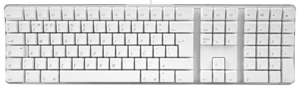While laptops might need flat keys for portability (though I might argue the point), I hate typing on them. I like full-sized keys, not flaccid little flat ones.
I once bought an Apple Mac G4, I don’t use it anymore but I still use the keyboard I bought for it. Using Linux, it is not too much of a problem just to use the IBM layout without (i.e. remembering that the double quote mark is above the 2 key for example) but it is worth setting it properly in case someone else needs to use my computer.
I also have an Apple Macbook Pro laptop for work reasons which also has the same key layout.
Anyway, I edited the file called /etc/default/keyboard and set the following option:
XKBVARIANT="mac"
I am in Great Britain, so I also need to be sure that the following option is set:
XKBLAYOUT=”gb”
Maybe there was a way to change this using a graphical tool, but this way worked.
Creating screen layouts with ARandR

ARandR Screen Layout Editor is a wonderful tool for setting up your monitors. You can drag them around, change the resolution and rotate them in order to create your perfect screen layout.
To save the configuration, click on ‘Layout’ then ‘Save As’ to save a particular configuration.
You can reload this configuration within the program, but the configuration file is itself a simple shell script (which calls xrandr with arguments representing what you have picked in the GUI).
So to automatically configure your screen layout when the graphical session first starts, you can append the script to the file:
~/.config/openbox/autostart
The fact that a configuration is just a shell script means you can easily have multiple layouts for different situations, and either call them yourself on the command line, assign desktop shortcuts or use other tools to call them, e.g. you can use cron to change the screen configuration at a certain time or write an upstart/systemd script to execute it based on some system event etc.
Dealing with not-found commands

When using the command line in Ubuntu, if you try to call a command/program that has not been installed, it says something like:
The program 'tuxpaint' is currently not installed. You can install it by typing:
sudo apt-get install tuxpaint
Here is a more complicated example:
The program 'a2ensite' is currently not installed. You can install it by typing:
sudo apt-get install apache2.2-common
What actually happens here is a Python script appropriately named command-not-found is called which then looks up what package is needed to run the program.
If you want the same behaviour on Crunchbang, just do:
sudo apt-get install command-not-found
The problem with this utility on older hardware is when you accidentally make a typo that is actually a valid command somewhere, you get a second or so delay while it searches Apt’s cache, which could get annoying quite quickly.
If you want to search for a particular package, you can just use the pre-installed apt-cache command, e.g.:
sudo apt-cache search tuxpaint
All the packages to do with tuxpaint are listed in the terminal. However, this does not go down to the file level like command-not-found does. For example, the other example of a2ensite finds nothing:
sudo apt-cache search a2ensite
I don’t know a way of searching for a package by command using the stock Crunchbang install. However, you can install the apt-file package, which allows searches like:
apt-file search filename
Installing Multiple Versions of Firefox
8Y3U5AJRHKZ2
So I want to test my web application using multiple versions of Firefox, especially the latest version, but I do not want to mess with my default system version (which is in fact Iceweasel :).
You can make this as over-complicated as you like. The simple way is to ignore apt and your system packaging system and run the test browser completely in user space.
The downside of this is that you will not get automatic security updates, so you have to keep an eye yourself for them and download new versions yourself. On the bright side, the browser is running as an unprivileged user and you are only testing your own site.
So you just download the archive from Mozilla. So I am using 64 bit Linux and I speak British English, so I used the following URL:
http://ftp.mozilla.org/pub/mozilla.org/firefox/releases/latest/linux-x86_64/en-GB/
You can edit the URL as appropriate and then unpack it e.g.:
tar jxf firefox*.tar.bz2
Inside the new firefox directory there is an executable named, somewhat unsurprisingly, firefox, call it in the following way:
./firefox -no-remote -P
This will pop up a little dialogue that allows you to choose the user profile, so create a new one:

You can see I have created a profile called Firefox26. In this way, the new Firefox version will not mess with the main system version. Click ‘Start Firefox’ to launch it. Having a new profile for each test version will keep things both sane and nicely decoupled.
Building Python from source on Debian or Ubuntu
Python is available pre-built for more or less every platform and if you are using Linux or Mac then you have it already. If you don’t know why would you want to build Python from source, then this post is probably not for you.
I wanted to test things on a newer version of Python than is currently available in Debian stable. There are also things I want to improve in the standard library, but sadly I do not have time for that at the present moment - but a man is allowed to dream.
Building Python is explained in the Python Developer’s Guide. This post is a commentary on that, and I am assuming you are using a Debian or Ubuntu based operating system on your computer.
To start with you need the Mercurial source control management tool, commonly known as hg. If you don’t have it, you can get it with the following command:
sudo apt-get install mercurial
Now you need to get the source code of Python, as the developer guide says:
hg clone http://hg.python.org/cpython
You will get output like this:
destination directory: cpython
requesting all changes
adding changesets
Now you have to wait for a little bit; obviously there has been quite a lot of changes since Python began in 1989, so this may take ten minutes (depending on the speed of your computer). There is no progress bar or anything, so you have to just have faith that something is happening. Eventually, I ended up with 301 M in my new cpython directory.
While that is working, open a new terminal tab and start installing the dependencies. As the guide points out, the following gives the minimum required:
sudo apt-get build-dep python3
Several modules in the standard library depend on optional dependencies, to get them all you can do this:
sudo apt-get install libreadline6-dev libsqlite3-dev liblzma-dev libbz2-dev tk8.5-dev blt-dev libgdbm-dev libssl-dev libncurses5-dev
Feel free to leave out the ones you know you are not interested in e.g. a server will not need support for GUIs, so leave out tk8.5-dev and blt-dev in that case.
A slightly obvious point, but worth pointing out, is that some of these packages have version numbers in. If your distribution has newer packages than mine, especially if you are reading this post years after I wrote it, then this command might give errors. In that case, first try increasing the numbers.
Now we are ready to go back to the developer guide:
cd cpython
./configure --with-pydebug
make -s -j2
For completeness, I will just point out that -s is for silent and -j2 allows make to use two parallel ‘jobs’ which then invoke the compiler i.e. gcc (for portability reasons make does not use threads or processes but has its own internal jobserver), you can increase the number 2 but compiling Python is pretty quick (especially compared to the earlier steps), around half of cpython is actually written in Python anyway.
Even more minimal with CrunchBang Linux
I seem to have become the Littlest Hobo of Linux distributions. I still like Lubuntu, which is perhaps the best known of half a dozen configured distribution disk images based on the fast and efficient LXDE.
However, I accidentally selected an option in the login manager of Lubuntu that made my computer boot into plain Openbox, and I was hooked.
Then in May 2003, I noticed the release announcement of CrunchBang 11 “Waldorf” (which coincided with Debian 7 “Wheezy”) and installed it onto an old machine.
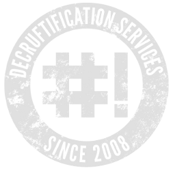CrunchBang Linux. is even more minimal than Lubuntu, using the Openbox window manager, like Lubuntu does, however Crunchbang does not put any desktop environment on top.
I initially just installed it for research purposes, I wanted to learn what an Openbox distribution looks like when properly configured. I thought I was just picking up ideas that I would be able to bring back to my Lubuntu computer. (It turns out that Crunchbang is pretty much the only Openbox distribution.)
The almost completely empty grey screen felt a bit depressing at first but it subconsciously grew on me; when you have all your applications open, the theme is a tasteful yet minimalist frame, the OS completely gets out of the way.
The key combination Super and Space (Super is also known as Command on the Apple Mac or the Windows key on Microsoft) brings up the main menu wherever the mouse cursor is (you can also use right click). This is especially beautiful on multiple monitors as you do not need to move your focus to the bottom corner of the left most monitor.

The level of configuration and integration is really quite stunning for such a small team. However, once up and running, you are basically just running Debian. Apart from a few packages like the themes as so on, everything comes straight from the Debian stable repositories. Indeed Crunchbang might as well just be one of the default Debian disk images.
After using some form of Ubuntu or other for the last seven years or so, I was initially a bit hesitant to install a Debian based system on my desktop. However, I need not have worried, the difference between Debian and Ubuntu is rather marginal and certainly far less than my previous jumps from Slackware to Redhat to Gentoo to Ubuntu.